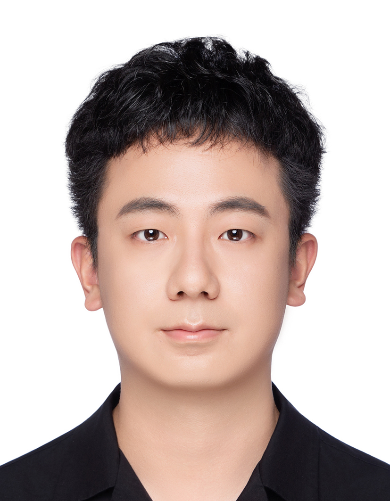

About Me
I am now a Postdoctoral Researcher at University of California, Berkeley, Department of Statistics , hosted by Prof. Michael Mahoney . Before that, I received my Ph.D. from CentraleSupélec , University Paris-Saclay in 2019, where I worked under the supervision of Prof. Romain Couillet and Prof. Yacine Chitour . I received my B.Sc degree in Optical & Electronic Information from Huazhong University of Science & Technology , China and my M.Sc. degree in Signal and Image Processing from CentraleSupélec /Paris-Sud University , France in 2016. My research interests are broadly in machine learning, signal processing, random matrix theory and high dimensional statistics.
Curriculum vitae
Here is my CV .
News
Two papers at NeurIPS'2020! Check here .
Invited talk on “Dynamical aspects of learning linear neural networks” at Second Symposium on Machine Learning and Dynamical Systems , Fields Institute , Toronto, September, 2020. See slides here .
Invited talk on “Random matrix advances in large dimensional machine learning” at Random Matrices and Complex Data Analysis Workshop , Shanghai University of Finance and Economics , Shanghai, China, 10-12 December, 2019. See slides here .
Presenting a poster on “inner-product kernels are asymptotically equivalent to binary discrete kernels” at the PAISS 2019 , Paris, 3-5 October, 2019, come and discuss! See preprint here .
2nd prize of the ED STIC Ph.D. Student Award here .
E-mail : zhenyu.liao@berkeley.edu .
Directions :